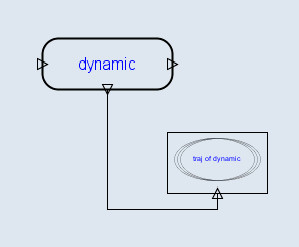

Create an Dynamic System with nonlinear model as
set the initial state for the model
Connect the “x” terminal of the module to a “traj” module

press the “simu” button on the control panel
double click the “traj” icon to show the state space trajectory